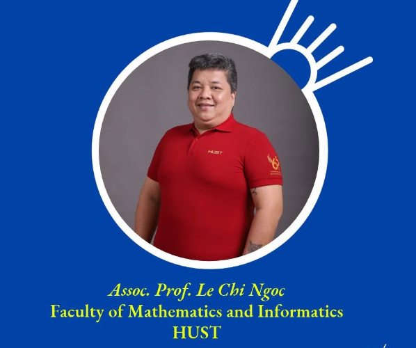
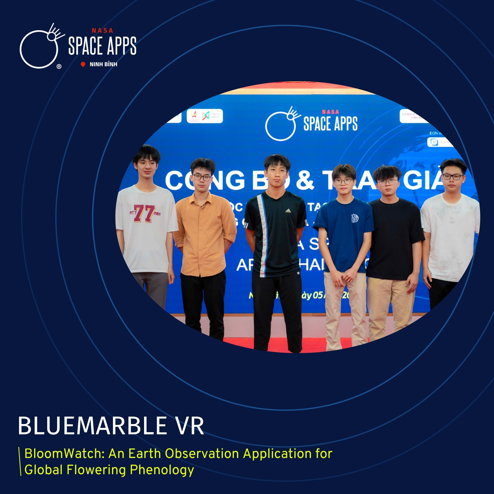

Chỉ còn ít ngày nữa, NASA Space Apps Challenge Hà Nội 2026 chính thức khởi tranh. Trong 48 giờ, các đội sẽ phải biến một thử thách của NASA thành sản phẩm chạy được và thuyết phục ban giám khảo. Làm thế nào để tận dụng tốt những ngày cuối cùng và tránh những lỗi khiến ý tưởng hay vẫn trượt giải? SEPA đã trò chuyện với các thành viên Ban giám khảo và phụ huynh của đội đạt giải Nhất năm 2025 để tổng hợp những lời khuyên thiết thực nhất.
1. TS. Mai Xuân Tráng: Chốt đề bài, có demo chạy được
TS. Mai Xuân Tráng, Tiến sĩ Công nghệ thông tin tại Đại học Kyoto (Nhật Bản), Phó Hiệu trưởng Trường Công nghệ thông tin Phenikaa, Đại học Phenikaa, Giám khảo NASA Space Apps Hà Nội 2026.
Các đội nên chú ý điều gì trong những ngày cận kề?
Chốt đề bài, đừng ôm đồm. Space Apps luôn có nhiều thử thách khác nhau (môi trường, khí hậu, dữ liệu vũ trụ…). Việc đầu tiên và quan trọng nhất là chọn đúng một thử thách phù hợp với năng lực của đội và cam kết theo đến cùng, tránh đổi ý giữa chừng khi chỉ có 48 giờ.
Đọc kỹ phần “Resources” của đề bài. Mỗi thử thách đều gợi ý sẵn nguồn dữ liệu của NASA và các đối tác (dữ liệu Trái Đất, API mở…). Hãy kiểm tra trước xem dữ liệu có tải về và dùng được không, để không mất nửa thời gian thi chỉ vì lỗi truy cập dữ liệu.
Phân vai rõ ràng. Ai lo dữ liệu và kỹ thuật, ai lo thiết kế và trải nghiệm người dùng, ai lo trình bày. Sản phẩm được chấm không chỉ ở mã nguồn mà còn ở cách đội kể câu chuyện.
Chuẩn bị trước khung sản phẩm tối giản (MVP). Phác thảo kiến trúc và giao diện (storyboard, wireframe) từ trước, để khi vào thi chỉ cần hiện thực hoá, không mất những giờ đầu vì “chưa biết làm gì”.
Tập dượt phần trình bày. Thời gian chấm mỗi đội rất ngắn, thường chỉ 5–7 phút. Hãy luyện trước cách demo và slide, đừng để đến phút chót.
Những lỗi nào khiến một ý tưởng tốt chưa được đánh giá cao?
Ý tưởng hay nhưng không có demo chạy được. Giám khảo cần thấy sản phẩm hoạt động, dù chỉ ở mức MVP, chứ không chỉ nghe thuyết trình ý tưởng kèm slide đẹp.
Dùng dữ liệu NASA cho có. Đề bài thường yêu cầu khai thác một bộ dữ liệu mở cụ thể, nhưng nhiều đội chỉ gắn logo NASA mà không thực sự dùng dữ liệu để giải quyết vấn đề. Đây là điểm bị trừ nặng vì lệch tiêu chí “Validity/Relevance” của cuộc thi.
Thiếu tính khả thi và tác động (Feasibility & Impact). Ý tưởng tham vọng nhưng không trả lời được ai sẽ dùng, dùng thế nào và giải quyết vấn đề thực tế nào. Giám khảo thường hỏi thẳng: “Người dùng cuối là ai, và họ được lợi gì?”
Trình bày lan man. Thời gian ngắn mà đội dành quá nhiều cho giải thích công nghệ, thay vì nói rõ theo đúng thứ tự giám khảo cần nghe: vấn đề → giải pháp → tác động.
2. Giám khảo Lê Bảo Anh: Phát huy sự sáng tạo của tuổi trẻ
Giám khảo Lê Bảo Anh, Giảng viên Học viện Công nghệ AIUNI.
Các đội thi nên chú ý điều gì trong thời điểm này?
Các đội nên chú ý đến cách triển khai một dự án: sản phẩm cần phù hợp với năng lực của đội và thể hiện được tư duy thiết kế sản phẩm.
Thí sinh nhỏ tuổi, lần đầu tham dự nên phát huy thế mạnh gì?
Với các bạn trẻ và các đội chưa có kinh nghiệm, thế mạnh là sự sáng tạo, nhiệt huyết và không phải chịu áp lực quá lớn. Ý tưởng của các bạn chưa bị gọt giũa, không đi theo lối mòn, nên sản phẩm hoàn toàn có thể tạo ra đột biến. Hãy phát huy khả năng sáng tạo, tinh thần học hỏi và chiến đấu hết mình.
Giám khảo Lê Bảo Anh
3. PGS.TS. Lê Chí Ngọc: Những lỗi nghiêm trọng cần tránh khi làm sản phẩm

PGS.TS. Lê Chí Ngọc, Khoa Toán – Tin, Đại học Bách khoa Hà Nội (HUST)
Tại buổi Kick-off NASA Space Apps Hà Nội 2026 ở Đại sứ quán Hoa Kỳ, PGS.TS. Lê Chí Ngọc (Khoa Toán – Tin, Đại học Bách khoa Hà Nội) đã chỉ ra những lỗi khiến sản phẩm mất điểm:
Gắn AI vào sản phẩm nhưng không giải thích được giá trị mà AI mang lại.
Không chứng minh được thuật toán tốt hơn một giải pháp đơn giản.
Dùng dữ liệu giả mà không khai báo, khiến kết quả đánh giá không đáng tin.
Chỉ số thực nghiệm cao nhưng sai về phương pháp.
Không nêu mức độ bất định (uncertainty), tạo cảm giác chính xác giả.
Không dẫn nguồn, nên không kiểm chứng được kết luận.
Quá nhiều tính năng nhưng không có một luồng chính hoàn chỉnh.
Demo không tái lập được, không chứng minh được sản phẩm hoạt động ngoài video.
Sai phạm vi đề tài: sản phẩm có thể tốt nhưng không giải quyết đúng yêu cầu của thử thách.
4. Kinh nghiệm từ phụ huynh đội đạt giải Nhất 2025

Đội BlueMarble VR với dự án “BloomWatch: An Earth Observation Application for Global Flowering Phenology”
TS. Cao Thị Luyên, giảng viên chính, Trưởng bộ môn Công nghệ phần mềm, Khoa Công nghệ thông tin, Trường Đại học Giao thông Vận tải, là phụ huynh của một thành viên đội BlueMarble VR. Năm 2025, đội giành giải Nhất, giải Nghệ thuật và Công nghệ, và được đề cử tham dự vòng toàn cầu.
Là người theo sát dự án của đội, TS. Cao Thị Luyên chia sẻ một số kinh nghiệm thực tiễn, đặc biệt dành cho các bạn lần đầu tham dự:
Xác định đúng vấn đề
Dự án cần xuất phát từ một vấn đề thực tế và có ý nghĩa, không xuất phát từ mục tiêu giành giải. Đội cần làm rõ: ai gặp vấn đề, mức độ ảnh hưởng ra sao, và vì sao các giải pháp hiện có chưa đáp ứng được. Đây là cơ sở để chọn giải pháp, dữ liệu và tiêu chí đánh giá.
Giới hạn phạm vi sản phẩm
Thời gian thi ngắn nên cần xác định phạm vi ngay từ đầu. Hãy ưu tiên một bản mẫu ít chức năng nhưng hoạt động ổn định, dùng dữ liệu NASA đúng mục đích và trình diễn được, hơn là một hệ thống nhiều chức năng nhưng chưa hoàn thiện.
Sử dụng dữ liệu NASA hiệu quả
Dữ liệu NASA rất phong phú, đội cần nghiên cứu để chọn ra những thông tin quan trọng cho bài toán của mình. Đội cũng nên nói rõ bộ dữ liệu đã dùng, nguồn gốc, cách tiền xử lý và vai trò của dữ liệu trong kết quả đầu ra.
Phân công theo năng lực
Một thành viên có thể kiêm nhiều vai trò, nhưng mỗi phần việc phải có một người chịu trách nhiệm chính. Trưởng nhóm nên là người biết điều phối và nắm được tổng thể, không nhất thiết là người lập trình giỏi nhất. Mọi thành viên đều cần hiểu sản phẩm ở mức cơ bản để cùng trả lời câu hỏi của ban giám khảo.
Chuẩn bị trình bày và hỏi đáp
Phần trình bày cần logic và có demo. Đội nên chuẩn bị trước câu trả lời cho 5 câu hỏi:
Dự án giải quyết vấn đề gì, và vì sao chọn vấn đề này?
Dữ liệu NASA nào được sử dụng, và được xử lý như thế nào?
Sản phẩm khác biệt ra sao so với các giải pháp hiện có?
Sản phẩm đã được thử nghiệm ở mức độ nào, với đối tượng nào, kết quả ra sao?
Hướng phát triển tiếp theo là gì?
Kết quả phải được trình bày trung thực, đúng với mức độ đã đạt được. Kết quả thử nghiệm cần ghi rõ là thử nghiệm, và phản hồi của người dùng cần có dẫn chứng cụ thể.
Luôn có phương án dự phòng
Dữ liệu cần được lưu trữ và đồng bộ ở ít nhất hai nơi, kèm bản dự phòng để phòng sự cố ngoài dự kiến.
Cuộc thi là cơ hội để rèn luyện kỹ năng nghiên cứu, làm việc nhóm và phát triển sản phẩm. Thực tiễn cho thấy một dự án tốt không cần bắt đầu từ ý tưởng lớn. Điều quyết định là hiểu đúng vấn đề, phát huy năng lực của từng thành viên, theo đuổi đến cùng và liên tục hoàn thiện sản phẩm.
TS. Cao Thị Luyên
Tóm tắt: 5 điều cần nhớ trước giờ G
Chọn một thử thách, bám theo đến cùng và giữ đúng phạm vi đề bài.
Kiểm tra trước dữ liệu NASA và dùng dữ liệu thật sự để giải bài toán.
Làm một MVP nhỏ nhưng chạy được, demo tái lập được.
Trình bày theo thứ tự vấn đề → giải pháp → tác động, trung thực về kết quả.
Phân vai rõ, cả đội đều hiểu sản phẩm, luôn có bản dự phòng.
Chúc các đội thi NASA Space Apps Challenge Hà Nội 2026 có 48 giờ sáng tạo bùng nổ và những sản phẩm thật ấn tượng!